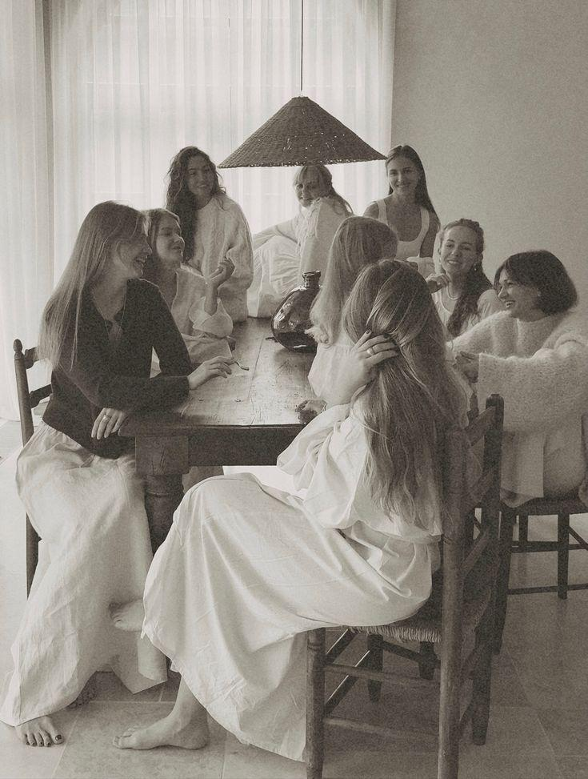
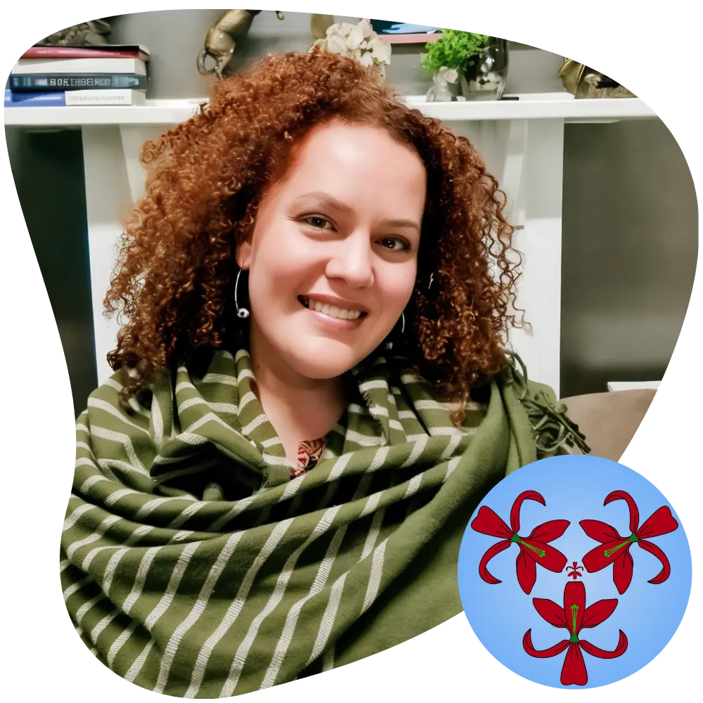

31 October 2026
Trauma, Grief and Loss
A space to reflect on loss, grief and traumatic experiences, held with care and safety.
Register for this groupTherapeutic sessions · Training · Supervision
Atma Qatarse Institute is a counselling practice led by Claudia Cady. It offers online therapeutic sessions for individuals, couples and groups, and is opening training and supervision for practitioners.
Trauma-informed care. Online sessions in English, Portuguese and Spanish.

The ÁtmaQatarse Method
The ÁtmaQatarse Method is a structured therapeutic approach grounded in psychodynamic and psychoanalytic principles, combined with active clinical guidance. Rather than staying only with what you feel today, it looks at the patterns underneath. It is guided by trauma-informed care, so the space stays safe, respectful and free of pressure.
Recognise
You look at the unconscious patterns behind your experiences and the repetitions that keep returning in your life.
Understand
You trace the origins of emotional conflict, recognising both your strengths and the impact of what you have lived through.
Change
Each session follows a clear process that connects insight with action, so you move beyond temporary relief into sustainable change.
Online, in three formats.
Individual and couple sessions are booked in the calendar. The therapeutic group is the institute's community work and has its own dates.
Community project
Ágape Women's Support (AWS) is a women-centred community project created to offer accessible, respectful and welcoming spaces for reflection, listening and connection.
We believe that opportunities for emotional care, self-understanding and connection should not depend solely on financial circumstances. AWS therefore seeks to create a space where experiences can be shared, heard and reflected upon, fostering understanding, connection and meaning-making.
AWS currently focuses on two main activities: the Women's Therapeutic Group and Blog / Reflections.
The Women's Therapeutic Group meets online in small, facilitated groups, creating space for reflection and dialogue around experiences that shape women's lives, including trauma, grief and loss, sexuality, the body, family, relationships, identity, boundaries and emotional overload.
The Blog / Reflections brings together writing related to women's experiences and the themes explored through the project, providing opportunities for continued reflection beyond the group meetings.
Financial circumstances should not be a barrier to participation. For this reason, AWS groups do not have a compulsory participation fee. Participants may register for $0.
For those who would like to contribute towards the continuation of the project, there will also be an option to make a voluntary contribution. Financial contribution does not change access to, or the experience of, participating in the group.
Ágape Women's Support was founded by Claudia Cady, counsellor and facilitator, and has been developing since 2020.
Claudia is responsible for the therapeutic direction of the project and the facilitation of the groups. Her practice is guided by attentive listening, respect for each person's individuality, and the creation of spaces where difficult experiences can be explored with care and dignity.
Online via Microsoft Teams. 2 hours. Small group. Register for $0, with an optional voluntary contribution.
31 October 2026
A space to reflect on loss, grief and traumatic experiences, held with care and safety.
Register for this group21 November 2026
A group reflection on emotional overload, family expectations, gender roles and healthy boundaries.
Register for this group13 December 2026
A meeting to explore women's relationship with their sexuality, questioning taboos and caring for emotional wellbeing.
Register for this groupRegistration and the consent form are completed on Humanitix.
New dates and reflections are announced in the Ágape Women's Support WhatsApp group.

Claudia Cady
The institute is led by Claudia Cady, counsellor and psychoanalyst, registered member of the Australian Counselling Association. She has worked in counselling since 2008, with a focus on trauma, grief, life transitions and complex emotional challenges.
Training and supervision are opening in stages. Leave your details and you will hear when each one opens.
The institute is preparing its first training as a pilot program. Format and dates will be announced.
Register my interestGroup supervision for practitioners, with Claudia Cady. The waiting list is open.
Join the waiting list"Her guidance is precise but always gentle. I feel supported to ask the hard questions without ever feeling judged."
"I understand situations I hadn't before, and I feel even more confident in being myself and expressing my feelings and thoughts."
"I came to Claudia at a time when I was lost as a person and especially as a woman. Through each session, I found and remembered things that I didn't even believe were so important for my evolution."
Open the online calendar with the "Book a session" button and choose a time that suits you.
No. You can register for $0. If you would like to support the project, there is an optional voluntary contribution. It does not change your access to the group.
Online, via Microsoft Teams. Each meeting lasts 2 hours, in a small group facilitated by Claudia. Registration is done through Humanitix.
In English, Portuguese or Spanish. Sessions are held online.
Training starts as a pilot and its dates are still to be announced. Supervision is planned from May 2027. Leave your details below and you will be told when each one opens.
These services offer support, information and referrals for people experiencing domestic violence.
To begin sessions, choose a time in the calendar. For training, supervision or anything else, write to Claudia using the form and she will reply.
Depth creates freedom.
Book a session